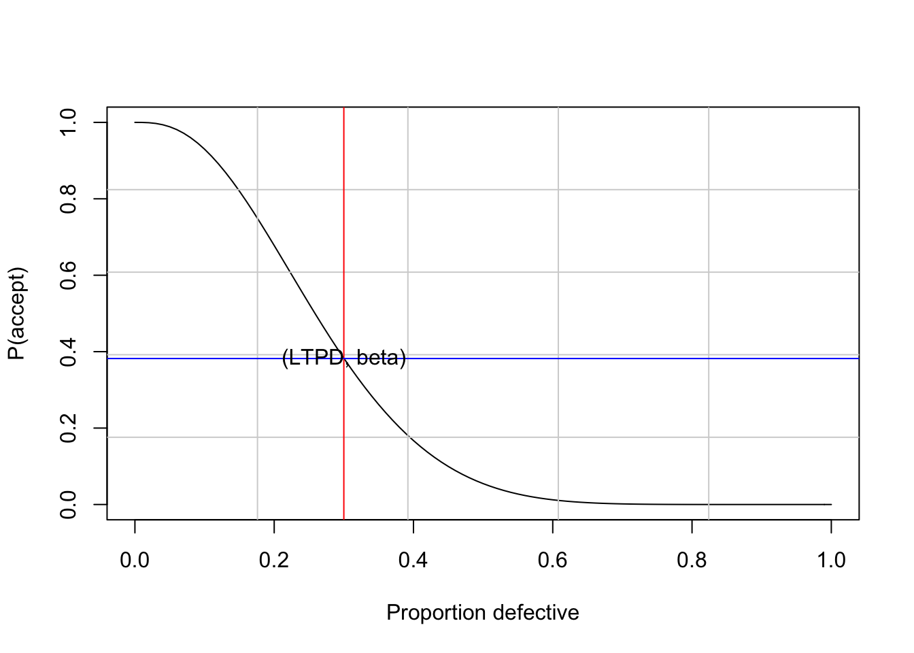

Bölüm 11 Diğer Kontrol Diyagramları
CUSUM kontrol diyagramları, 1960’lı yıllarda Shewhart kontrol çizelgelerine alternatif olarak ortaya çıkmıştır. Bu diyagramlar Shewhart kontrol diyagramlarına göre ortalamalar üzerindeki küçük değişimlerin fark edilmesinde daha etkilidir. Temelde sürecin kontrolde olup olmadığını inceleyebilmek için alternatif bir yol olarak ortaya konmuştur. CUSUM kontrol diyagramları E.S Page tarafından 1954 yılında geliştirilmiş olup, örneklem ortalaması ile hedef değer olarak tanımladığı bir değer arasındaki farkların birikimli toplamına dayalı bir yöntemdir.
Shewhart tarafından önerilen kontrol diyagramlarının temel zayıflığı yığın ortalamasında gözlemlenen küçük değişimlere karşı nispeten hassas olmamasıdır. Yani, bu tür bir değişim ortaya çıktığında, çizilen her bir değer sadece bir alt gruba dayandığından ve bu nedenle nispeten daha büyük varyansa sahip olma eğiliminde olduğundan, değişimi ortaya koymak ortalama olarak çok sayıda çizilmiş değer gerektirir. Bu zayıflığı düzeltmenin bir yolu çizilen her bir değerin sadece en son alt grup ortalamasına değil, aynı zamanda diğer alt grup ortalamalarına da bağlı olmasına izin verilmelidir.
Shewhart tarafından önerilen kontrol diyagramlarının eksik yanları;
- Sadece bir noktaya ya da tek bir örnekleme dayanarak karar verilmesi
- Prosesteki küçük ancak sürekli kaymalara karşı yeterince duyarlı olmaması
olarak açıklanabilir. Bu bakımdan alternatif kontrol diyagramları önerilmiştir. Bu diyagramlar, Shewhart diyagramlara kıyasla performansta oldukça artış sağlamaktadır.
11.1 CUSUM (Cumulative Sum) Kontrol Diyagramı
Hem nicel hem de nitel gözlemler için kullanılabilen CUSUM (Cumulative Sum) kontrol diyagramı tabular yöntem veya V maskesi yöntemi ile uygulanabilmektedir. CUSUM diyagramı, UCL, LCL ve CL yerine Barnhard (1959) tarafından geliştirilen V maskesini kullanabilmektedir. V maskesi ile üretim sürecinin kontrol sınırları belirlenmektedir.
CUSUM kontrol diyagramı, örneklem ortalamaları serisi yerine daha basit bir seri niteliğindeki bireysel gözlem değerleri kullanılmaktadır.
Proses ortalamasından küçük sapmalarda (\(0.5\sigma\)) CUSUM kontrol diyagramları iyi sonuç verirken, (\(1.5\sigma\) veya \(2\sigma\)) gibi daha büyük sapma miktarlarında Shewhart kontrol diyagramlarının daha iyi sonuç verdiği görülmektedir. Ayrıca örneklem büyüklüğünün \(n=1\) olduğu durumda verimli sonuçlar elde edilmektedir.
\(\mu_{1}=\mu_{0}\) ise eğim 0 dır.
\(\mu_{1}>\mu_{0}\) ise eğim pozitif
\(\mu_{1}<\mu_{0}\) ise eğim negatif
Diyagramda gözlenen pozitif veya negatif trend proses ortalamasında kayma olduğunun bir kanıtı olarak görülür ve özel değişkenlik kaynağı incelenir.
\(\mu_{1}=\mu_{0}\) ise noktalar 0 etrafında dağılır.
\(\mu_{1}>\mu_{0}\) ise noktalar pozitif yönde yukarı doğru dağılır.
\(\mu_{1}<\mu_{0}\) ise noktalar negatif yönde aşağı doğru dağılır.
11.1.1 Çizelge (Tabular) Yöntemi
Proses ortalamasını izlemek için kullanılan yöntemlerden biri çizelge (tabular) yöntemidir. Hem bireysel gözlemler, hem de alt grup ortalamaları için elde edilebilir.
\(C^+_{i}=max[0,x_{i}-(\mu_{0}+K)+C^+_{i-1}]\)
\(C^-_{i}=max[0,(\mu_{0}-K)-x_{i}+C^-_{i-1}]\)
\(C^+_{0}=C^-_{0}=0\)
burada \(\mu_{0}\) hedef (target) değer ve \(K\) referans değerdir. \(n>2\) için \(x_{i}\) yerine \(\bar{x}_{i}\) kullanılır.
\(K=\frac{\delta}{2}\sigma=\frac{|\mu_{1}-\mu_{0}|}{2}\)
Genellikle \(\mu_{1}=\mu_{0}\pm1\sigma\) dolayısı ile \(K=\sigma/2\)
\(H\) (decision interval) karar aralığı, genellikle \(5\sigma\) seçilir. \(C^+_{i}\) veya \(C^-_{i}\) karar aralığını (\(\pm H\)) aşarsa, proses kontrol altında değildir.
Örnek1: Aşağıda yer alan x verisi toplam 30 gözlemden oluşmakta olup ilk 20 gözlemi \(\mu=10\) ve \(\sigma=1\) olan normal dağılımdan rasgele üretilmiştir. Kalan 10 gözlem ise \(\mu=11\) ve \(\sigma=1\) olan normal dağılımdan rasgele üretilmiştir. Veri için CUSUM diyagramını oluşturunuz.
c0p=0
c0n=0
m0=10
k=1/2
c1p=max(0,x[1]-(m0+k)+c0p)
c1n=max(0,(m0-k)-x[1]+c0n)
c2p=max(0,x[2]-(m0+k)+c1p)
c2n=max(0,(m0-k)-x[2]+c1n)
c3p=max(0,x[3]-(m0+k)+c2p)
c3n=max(0,(m0-k)-x[3]+c2n)
c(c1p=c1p,c1n=c1n,c2p=c2p,c2n=c2n,c3p=c3p,c3n=c3n)## c1p c1n c2p c2n c3p c3n
## 0.00 0.05 0.00 1.56 0.00 1.77Örnek2:
library(qcc)
data(pistonrings)
attach(pistonrings)
diameter <- qcc.groups(diameter, sample)
q <- cusum(diameter[1:25,], decision.interval = 4, se.shift = 1)
##
## Call:
## cusum(data = diameter[1:25, ], decision.interval = 4, se.shift = 1)
##
## cusum chart for diameter[1:25, ]
##
## Summary of group statistics:
## Min. 1st Qu. Median Mean 3rd Qu. Max.
## 73.99 74.00 74.00 74.00 74.00 74.01
##
## Group sample size: 5
## Number of groups: 25
## Center of group statistics: 74.00118
## Standard deviation: 0.009785039
##
## Decision interval (std.err.): 4
## Shift detection (std. err.): 1##
## Call:
## cusum(data = diameter[1:25, ], newdata = diameter[26:40, ])
##
## cusum chart for diameter[1:25, ]
##
## Summary of group statistics:
## Min. 1st Qu. Median Mean 3rd Qu. Max.
## 73.99 74.00 74.00 74.00 74.00 74.01
##
## Group sample size: 5
## Number of groups: 25
## Center of group statistics: 74.00118
## Standard deviation: 0.009785039
##
## Summary of group statistics in diameter[26:40, ]:
## Min. 1st Qu. Median Mean 3rd Qu. Max.
## 73.99220 74.00290 74.00720 74.00765 74.01270 74.02340
##
## Group sample size: 5
## Number of groups: 15
##
## Decision interval (std.err.): 5
## Shift detection (std. err.): 1
11.1.2 V Maskesi Yöntemi
V maskesi yöntemi Barnard tarafından 1959 yılında önerilmiştir. Temel düşünce \(C_{1},C_{2},...,C_{i}\) bütün kümülatif toplamların V maskesinin kolları arasında kalmasıdır, bu durumda proses kontrol altındadır. Kolların dışında kalan herhangi bir kümülatif toplam olması halinde proses kontrol altında değildir. V maske yapısı aşağıda yer almaktadır.
\(d=(\frac{2}{\delta^{2}})ln(\frac{1-\beta}{\alpha}))\)
\(\theta=tan^{-1}(\frac{\delta}{2A})\)
\(\delta=\frac{\Delta}{\sigma_{\bar{x}}}\)
\(\alpha:\) Proses ortalamasında sapma yok iken sapmanın olduğuna karar verme ihtimali
\(\beta:\) Gerçekte sapma var iken bunu tespit edememe ihtimali
\(\Delta:\) Proses ortalamasında meydana gelen sapma miktarı
\(A:\) Bir ölçek faktörüdür ve bu değer yatay eksen üzerindeki 1 birimlik uzunluğa dikey eksen üzerinde karşılık gelen değerdir. A değeri \(\sigma_{\bar{x}}\) ile \(2\sigma_{\bar{x}}\) arasında değişir ve genellikle \(2\sigma_{\bar{x}}\) olarak tercih edilir.
\(\delta:\) Araştırılmasına karar verilen proses seviyesindeki en küçük sapma miktarı
\(\theta:\) Orta çizgi ile kol arasındaki açı
Genel kullanımda V maskesi grafiklendirilen her yeni noktaya uygulanır yani her yeni örneklem ilavesinde maske yeniden düzenlenir. V maskesinin performansı d uzaklığı ve açısı ile belirlenir.
V maskesi, hesaplanan CUSUM değerlerinin sonuncusuna karşılık gelen O noktası ile OP doğrusu arasında merkezlenir.
V maskesinin performansı, d ve \(\theta\) parametreleri ile belirlenmektedir. Bu parametreler, karar verici tarafından tolere edilmek istenen 1. ve 2. tip hataları içeren risklere göre belirlenmektedir. 1. tip hata olasılığı \((\alpha)\), proses kontrol altında olmasına rağmen kontrol dışında olduğu kararına varma riskini ifade ederken, 2. tip hata olasılığı \((\beta)\) ise proses kontrol altında olmamasına rağmen kontrol altında olduğu kararına varma riskini ifade etmektedir.
11.2 EWMA (Exponentially Weighted Moving Average) Kontrol Diyagramı
1959 yılında Roberts tarafından geliştirilen EWMA (Üstel Ağırlıklı Hareketli Ortalama) kalite kontrol diyagramı, süreç ortalamalarındaki küçük fakat sürekli sapmalara karşı daha duyarlı olması sebebiyle Shewhart kalite kontrol diyagramlarına alternatif olarak geliştirilmiş olan bir diğer kalite kontrol diyagramıdır.
EWMA diyagramı, CUSUM diyagramı gibi süreçte meydana gelen küçük sapmaları saptamak amacıyla kullanılan ağırlıklandırılmış bir hareketli ortalama kontrol diyagramıdır.
EWMA’nın performansı, yani küçük sapmaları çabuk algılayabilmesi, CUSUM’la aynı olmakla beraber bu teknik kullanım açısından daha kolaydır. Genellikle bireysel gözlem değerlendirmede kullanılır, ancak örneklem ortalamalarının değerlendirilmesinde de kullanılabilir.
\(z_{i}=\lambda x_{i}+(1-\lambda)z_{i-1}\)
burada \(0<\lambda\leq1\) ve \(z_{0}=\mu_{0}\)’dır. Hedef değerin bilinmediği durumda ise \(z_{0}=\bar{x}\) olarak seçilir.
EWMA kontrol diyagramı, \(z_{i}\) değerlerinin zamana ya da gözlemlerin sırasına göre çizilmesiyle elde edilir.
\(z_{i}\), şimdiki ve geçmişteki tüm gözlem değerlerinin ağırlıklı ortalamasıdır ve bu nedenle normallik varsayımına oldukça duyarlıdır.
\(z_{i}=\lambda x_{i}+(1-\lambda)[\lambda x_{i}+(1-\lambda)z_{i-2}]\)
\(z_{i}=\lambda x_{i}+\lambda(1-\lambda)x_{i-1}+(1-\lambda)^2z_{i-2}\)
\(z_{i-j}\), \(j=2,3,...,t\) için;
\(z_{i}=\lambda \sum_{j=0}^{i-1}(1-\lambda)^{j}x_{i-j}+(1-\lambda)^{i}z_{0}\)
EWMA kontrol diyagramlarında, ağırlık değerleri zamana bağlı olarak alınan örneklerin sayısı arttıkça, geometrik olarak azalır ve ağırlıklar toplamı 1’e doğru yaklaşır. Geçmiş örneklere doğru gittikçe, örnek ağırlığı \(\lambda(1-\lambda)^{j}\) geometrik olarak azalacaktır.
EWMA bazen geometrik hareketli ortalama (geometric moving average (GMA)) olarak da adlandırılır.
Örneğin, \(\lambda=0.2\) olması durumunda (şuanki ağırlık), geçmiş örneklere atanan ağırlıklar sırası ile 0.16, 0.128, 0.1024 şeklinde azalan bie seyir izleyecektir.
EWMA, proses ortalamasından sapmaların küçük olduğu durumda (genellikle \(0.5\sigma-2\sigma\) aralığında) oldukça hızlı tespit imkanı sunar. Ancak büyük sapmaların tespitinde yavaş olduundan Shewhart kontrol diyagramlarını kullanmak daha doğru olacaktır.
\(Z_{i}\) değerlerinin varyansı;
\(\sigma^{2}_{z_{i}}=\sigma^{2}(\frac{\lambda}{2-\lambda})[1-(1-\lambda)^{2i}]\)
olup, UCL, CL ve LCL aşağıda yer almaktadır.
\(UCL=\mu_{0}+L\sigma\sqrt{\frac{\lambda}{(2-\lambda)}[1-(1-\lambda)^{2i}]}\)
\(CL=\mu_{0}\)
\(LCL=\mu_{0}-L\sigma\sqrt{\frac{\lambda}{(2-\lambda)}[1-(1-\lambda)^{2i}]}\)
bu noktada \(L\) ve \(\lambda\) parametrelerinin seçimi önemlidir.
Örneklem büyüklüğü arttıkça \([1-(1-\lambda)^{2i}]\) çarpanı 1’e yaklaşacağından kontrol limitleri aşağıdaki şekli alır. Küçük örneklem durumunda çarpanı içeren eşitlik kullanılmalıdır.
\(UCL=\mu_{0}+L\sigma\sqrt{\frac{\lambda}{(2-\lambda)}}\)
\(LCL=\mu_{0}-L\sigma\sqrt{\frac{\lambda}{(2-\lambda)}}\)
Alt kontrol grupları ile çalışma durumu;
Hedef değer bilinmiyorken;
\(UCL=\bar{\bar{x}}+3\sigma\sqrt{\frac{\lambda}{(2-\lambda)n}}\)
\(CL=\bar{\bar{x}}\)
\(LCL=\bar{\bar{x}}-3\sigma\sqrt{\frac{\lambda}{(2-\lambda)n}}\)
Hedef değeri ve proses standart sapması bilinmiyorken;
\(UCL=\bar{\bar{x}}+A_{2}\bar{R}\sqrt{\frac{\lambda}{(2-\lambda)}}\)
\(CL=\bar{\bar{x}}\)
\(LCL=\bar{\bar{x}}-A_{2}\bar{R}\sqrt{\frac{\lambda}{(2-\lambda)}}\)
Örnek1: CUSUM başlığında yer alan Örnek1 verisi (x) için \(\lambda=0.1\) ve \(L=2.7\) durumunda EWMA kontrol diyagramını oluşturunuz.
## [1] 9.945## [1] 9.7495Kontrol limitleri;
# 1. gozlem icin (i=1)
UCL1=m0+L*sgm*sqrt((lambda/(2-lambda)*(1-(1-lambda)^(2*1))))
CL1=m0
LCL1=m0-L*sgm*sqrt((lambda/(2-lambda)*(1-(1-lambda)^(2*1))))
c(UCL1=UCL1,CL1=CL1,LCL1=LCL1)## UCL1 CL1 LCL1
## 10.27 10.00 9.73# 2. gozlem icin (i=2)
UCL2=m0+L*sgm*sqrt((lambda/(2-lambda)*(1-(1-lambda)^(2*2))))
CL2=m0
LCL2=m0-L*sgm*sqrt((lambda/(2-lambda)*(1-(1-lambda)^(2*2))))
round(c(UCL2=UCL2,CL2=CL2,LCL2=LCL2),2)## UCL2 CL2 LCL2
## 10.36 10.00 9.64
## 1 2 3 4 5 6
## 9.945000 9.749500 9.703550 9.899195 10.125276 10.130748## LCL UCL
## [1,] 9.676036 10.32396
## [2,] 9.564151 10.43585
## [3,] 9.491253 10.50875
## [4,] 9.439108 10.56089
## [5,] 9.400185 10.59981
## [6,] 9.370419 10.62958##
## Call:
## ewma(data = diameter[1:25, ], lambda = 0.2, nsigmas = 3)
##
## ewma chart for diameter[1:25, ]
##
## Summary of group statistics:
## Min. 1st Qu. Median Mean 3rd Qu. Max.
## 73.99020 73.99820 74.00080 74.00118 74.00420 74.01020
##
## Group sample size: 5
## Number of groups: 25
## Center of group statistics: 74.00118
## Standard deviation: 0.009785039
##
## Smoothing parameter: 0.2
## Control limits:
## LCL UCL
## 1 73.99855 74.00380
## 2 73.99781 74.00454
## ...
## 25 73.99680 74.00555## List of 19
## $ call : language ewma(data = diameter[1:25, ], lambda = 0.2, nsigmas = 3, newdata = diameter[26:40, ])
## $ type : chr "ewma"
## $ data.name : chr "diameter[1:25, ]"
## $ data : num [1:25, 1:5] 74 74 74 74 74 ...
## ..- attr(*, "dimnames")=List of 2
## $ statistics : Named num [1:25] 74 74 74 74 74 ...
## ..- attr(*, "names")= chr [1:25] "1" "2" "3" "4" ...
## $ sizes : Named int [1:25] 5 5 5 5 5 5 5 5 5 5 ...
## ..- attr(*, "names")= chr [1:25] "1" "2" "3" "4" ...
## $ center : num 74
## $ std.dev : num 0.00979
## $ newstats : Named num [1:15] 74 74 74 74 74 ...
## ..- attr(*, "names")= chr [1:15] "26" "27" "28" "29" ...
## $ newdata : num [1:15, 1:5] 74 74 74 74 74 ...
## ..- attr(*, "dimnames")=List of 2
## $ newsizes : Named int [1:15] 5 5 5 5 5 5 5 5 5 5 ...
## ..- attr(*, "names")= chr [1:15] "26" "27" "28" "29" ...
## $ newdata.name: chr "diameter[26:40, ]"
## $ x : int [1:40] 1 2 3 4 5 6 7 8 9 10 ...
## $ y : Named num [1:40] 74 74 74 74 74 ...
## ..- attr(*, "names")= chr [1:40] "1" "2" "3" "4" ...
## $ sigma : Named num [1:40] 0.000875 0.001121 0.001253 0.001331 0.001378 ...
## ..- attr(*, "names")= chr [1:40] "1" "2" "3" "4" ...
## $ lambda : num 0.2
## $ nsigmas : num 3
## $ limits : num [1:40, 1:2] 74 74 74 74 74 ...
## ..- attr(*, "dimnames")=List of 2
## $ violations : Named int [1:4] 37 38 39 40
## ..- attr(*, "names")= chr [1:4] "37" "38" "39" "40"
## - attr(*, "class")= chr "ewma.qcc"Bu noktada önemli olan \(L\) ve \(\lambda\) değerlerinin seçimidir. Prosesteki küçük sapmaları tespit edebilmek için \(\lambda\) değerlerinin küçük seçilmesi gereklidir. \(\lambda\) için genellikle 0.05, 0.1, 0.20 ve 0.25 değerleri tercih edilmektedir. Büyük \(\lambda\) değerleri için \(L=3\) seçilirken, küçük \(\lambda\) değerlerinde ise 2.6-2.8 aralığında seçilir (Lucas ve Saccucci (1990)).